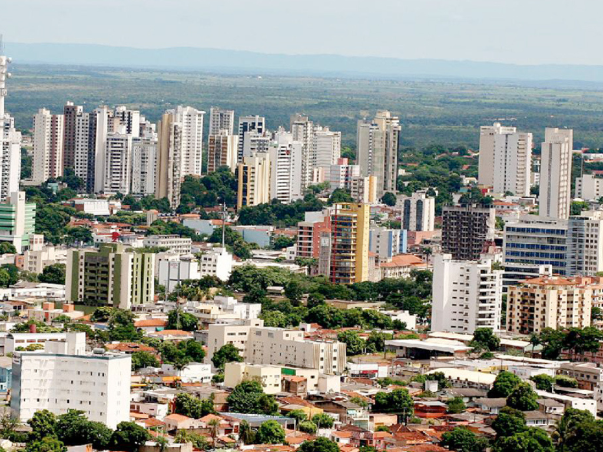

O Mato Grosso é uma potência econômica e ecológica, liderando a produção nacional de grãos e gado enquanto preserva uma biodiversidade única. É o único estado brasileiro a abrigar três biomas distintos: a Floresta Amazônica ao norte, as planícies alagadas do Pantanal ao sul e a savana do Cerrado no centro. Essa combinação geográfica faz do estado um destino extraordinário para o ecoturismo, abrigando locais como a Chapada dos Guimarães e as águas cristalinas de Nobres, onde a natureza se manifesta em sua forma mais pura. Sua cultura é um reflexo dessa mistura, unindo as tradições dos povos indígenas às heranças dos migrantes que desbravaram suas fronteiras.
